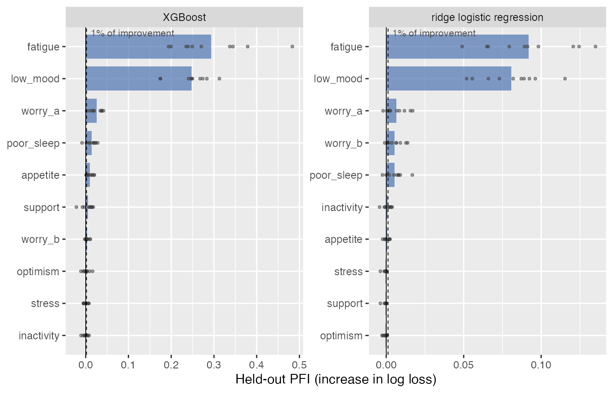
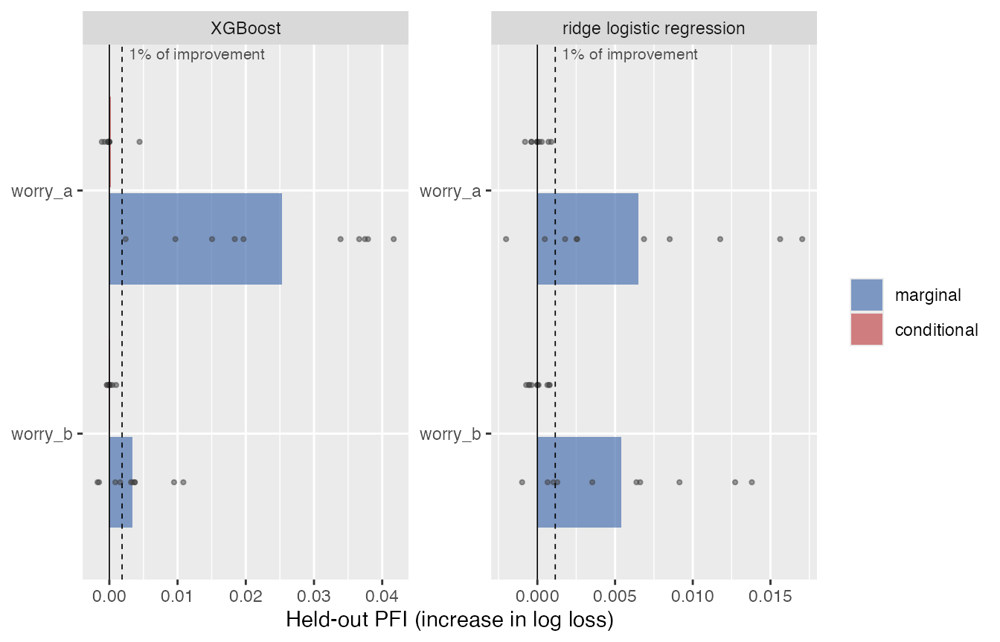

From an explanation to a checked claim
Source:vignettes/exploratory_workflow.Rmd
exploratory_workflow.RmdAn explanation of a fitted model, such as permutation feature importance (PFI), suggests a conclusion: “the model relies mainly on these two predictors.” Claim-Scoped Diagnostic Gates (CSDG) adds one question before such a conclusion is reported: does the evidence support this claim? The answer follows five steps: write the claim (Step 1), specify its scope (Step 2), derive the properties it requires (Step 3), evaluate the evidence for each (Step 4), and decide and report (Step 5). This vignette runs the steps in the order of an ordinary analysis on a simulated survey.
The analysis
The simulated survey has 1,000 respondents, 12 items, and a binary
outcome, low_wellbeing. Two scale scores,
low_mood and fatigue, predict it strongly, and
their combination raises the risk more than either alone (an
interaction). worry_a and worry_b are two
wordings of one 5-point worry item with nearly identical answers;
poor_sleep, stress, and
loneliness have weak effects; the other five items have
none.
simulate_survey = function(n, seed) {
set.seed(seed)
items = c("low_mood", "fatigue", "worry_a", "worry_b", "poor_sleep", "stress", "loneliness", "inactivity",
"appetite", "concentration", "support", "optimism")
x = as.data.table(matrix(rnorm(n * 12), n, 12, dimnames = list(NULL, items)))
worry = rnorm(n)
# two wordings of the same 5-point worry item; 2% of respondents answer them one category apart
x[, worry_a := as.integer(cut(worry + rnorm(n, sd = 0.3), c(-Inf, -1.2, -0.4, 0.4, 1.2, Inf)))]
x[, worry_b := pmin(5L, pmax(1L, worry_a + ifelse(runif(n) < 0.02, sample(c(-1L, 1L), n, TRUE), 0L)))]
eta = -0.5 + 1.2 * x$low_mood + 1.1 * x$fatigue + 1.5 * x$low_mood * x$fatigue + 0.7 * worry +
0.5 * x$poor_sleep + 0.2 * x$stress + 0.15 * x$loneliness
x[, low_wellbeing := factor(rbinom(n, 1, plogis(eta)), levels = c(0, 1))]
as_task_classif(x, target = "low_wellbeing", positive = "1", id = "survey")
}
task = simulate_survey(1000L, seed = 3L)csdg_fit() fits XGBoost and ridge logistic regression
with mlr3::benchmark() on the same ten cross-validation
splits, together with a model without predictors. Log loss serves as the
loss for the fold scores, for PFI, and for the improvement over the
model without predictors.
learners = list(
xgboost = lrn("classif.xgboost", nrounds = 100, eta = 0.1, max_depth = 3, predict_type = "prob"),
ridge = lrn("classif.cv_glmnet", alpha = 0, nfolds = 5, predict_type = "prob")
)
fits = csdg_fit(task, learners, folds = 10, seed = 1)
fits
#> <CSDGFits> survey: binary classification, 1,000 rows, 12 predictors, outcome low_wellbeing (positive class 1)
#> 10-fold cross-validation; the same splits for all learners and the model without predictors (seed 1)
#> Loss for PFI and improvement: log loss (classif.logloss)
#> learner classif.logloss classif.auc classif.acc
#> XGBoost 0.480 0.830 0.779
#> ridge logistic regression 0.551 0.796 0.755
#> model without predictors 0.666 0.500 0.619XGBoost predicts better on held-out data than ridge logistic
regression (log loss 0.480 versus 0.551), because it can represent the
interaction, so its explanation is the one worth reporting.
csdg_importance() computes held-out PFI, the increase in
held-out log loss when one predictor is permuted, in each fold with 20
permutations.
imp = csdg_importance(fits, repetitions = 20, seed = 2)
imp
#> <CSDGImportance> held-out PFI, increase in log loss; 10 folds x 20 permutations
#> XGBoost: held-out log loss 0.480; model without predictors 0.666
#> improvement 0.186; minimum importance (1% of the improvement) 0.0019
#> predictor mean PFI corrected 95% interval folds in top 2
#> fatigue 0.293 [0.198, 0.388] 10/10
#> low_mood 0.247 [0.202, 0.293] 10/10
#> worry_a 0.0253 [0.0109, 0.0397] 0/10
#> poor_sleep 0.0141 [0.0023, 0.0259] 0/10
#> appetite 0.0100 [0.0024, 0.0176] 0/10
#> support 0.0056 [-0.0074, 0.0186] 0/10
#> ... 6 more predictors
#> ridge logistic regression: held-out log loss 0.551; model without predictors 0.666
#> improvement 0.115; minimum importance (1% of the improvement) 0.0012
#> predictor mean PFI corrected 95% interval folds in top 2
#> fatigue 0.0918 [0.0624, 0.121] 10/10
#> low_mood 0.0809 [0.0606, 0.101] 10/10
#> worry_a 0.0065 [-0.0003, 0.0133] 0/10
#> worry_b 0.0054 [0.0000, 0.0108] 0/10
#> poor_sleep 0.0054 [-0.0004, 0.0112] 0/10
#> inactivity 0.0010 [-0.0016, 0.0037] 0/10
#> ... 6 more predictors
#> Folds in top 2: folds in which the predictor has one of the 2 largest PFI
#> values (print(x, k = )).
#> Intervals are reported descriptively. The minimum importance, the default
#> criterion of csdg_check(), is given in log loss units, because PFI values are
#> not parts of the improvement.
plot(imp)
For each learner, the printout gives the improvement over the model without predictors and 1% of it, the default minimum importance, in log-loss units; PFI values are not parts of the improvement, so they are compared with it in these units rather than as shares. The intervals are corrected resampled 95% intervals. In the plot, the bars are averages over folds, the points are folds, and the dashed line marks the minimum importance.
Steps 1 and 2: the claim and its scope
The result suggests that XGBoost relies mainly on
fatigue and low_mood.
claim_relies_mainly() writes this claim: each of the two
predictors with the largest average PFI has at least twice the PFI of
every other predictor. It also records the six scope elements (quantity,
model, procedure, data, meaning, and use) and that the claim was
formulated after the results were seen.
claim1 = claim_relies_mainly(imp, k = 2, factor = 2, learners = "xgboost")
claim1
#> <CSDG claim> relies_mainly_fatigue_low_mood_xgboost
#> XGBoost relies mainly on fatigue and low_mood.
#> Origin: exploratory. Formulated after inspecting the held-out PFI of XGBoost;
#> fatigue and low_mood are its two leading predictors on average.
claim1$scope$quantity
#> [1] "Learner PFI of each predictor under marginal permutation, which includes combinations absent from the data: the expected increase in held-out log loss for XGBoost fitted to training sets of 900 rows (9/10 of the sample)."Steps 3 and 4: required properties and evidence
csdg_check() derives the properties that the claim
requires from the gate plan and evaluates each with the default criteria
of the article. One property cannot be computed: whether the items
measure what their names say, whether the outcome was coded as intended,
and which respondents the data cover (G0b, measurement and data). The
data alone do not show this, so the package leaves G0b open until the
researcher judges it, here from the codebook and checks of the data. The
judgment is entered once and passed to every check of these data.
g0b = csdg_judge("G0b", supported(),
note = "Items and outcome coded as in the codebook; no missing or out-of-range values.")
chk1 = csdg_check(claim1, imp, judgments = g0b)
chk1
#> <CSDG check> XGBoost relies mainly on fatigue and low_mood.
#> Criteria (defaults, see ?csdg_check): minimum importance 1% of the improvement;
#> at least 9 of 10 folds; Monte Carlo rule; corrected 95% interval must clear the
#> smallest relevant difference.
#> gate check status observation
#> G0a specification supported Generated from the analysis: quantity,
#> model, procedure, data, meaning (model
#> description), and use.
#> G0b measurement supported Judged by the researcher: Items and
#> outcome coded as in the codebook; no
#> missing or out-of-range values.
#> G1 performance context Held-out log loss 0.480 versus 0.666
#> for the model without predictors
#> (improvement 0.186, a reduction by
#> 28%); 10 of 10 folds improve.
#> G2 dependence context R^2 on the other 11 predictors: fatigue
#> .01 and low_mood .01; no named
#> predictor reaches .50.
#> G2 content supported fatigue 0.293 and low_mood 0.247 versus
#> 0.0253 for worry_a, the largest other
#> predictor (11.6 and 9.78 times); margin
#> (PFI minus 2 x PFI of worry_a) 0.243
#> [0.142, 0.343] and 0.197 [0.135,
#> 0.259]; weakest of the 20 comparisons
#> with other predictors: low_mood minus 2
#> x worry_a, 0.197 [0.135, 0.259].
#> Against the largest other predictor of
#> each fold, which can differ between
#> folds: 0.237 [0.138, 0.337] and 0.191
#> [0.132, 0.250].
#> G2 minimum importance supported fatigue 0.293 and low_mood 0.247 versus
#> the minimum importance 0.0019 (1% of
#> the improvement of 0.186, from 0.666 to
#> 0.480).
#> G2 procedure supported Held-out marginal PFI with log loss, 20
#> permutations per fold in 10 folds, as
#> the scope names. No grouped or
#> conditional comparison was requested.
#> G5 stability supported Selected anew in each fold: 10 of 10
#> folds reproduce the result (cutoff 1: 0
#> of 10; cutoff 3: 2 of 10).
#> G6a other learner context ridge logistic regression: the result
#> also holds (fatigue 0.0918 and low_mood
#> 0.0809 versus 0.0065 for worry_a).Each row is one property with its gate, check, and status. Under G2,
the content compares the averages over folds: each named item is
compared with every other item, and each margin, the PFI of the named
item minus twice the PFI of the other item, must hold beyond Monte Carlo
error, with the lower bound of its corrected interval at or above the
smallest relevant difference; the observation reports the margins
against the largest other item and the weakest of all comparisons. The
minimum importance compares each named item with 1% of the improvement,
the procedure records that the wording names marginal PFI, and the
dependence screen reports how well the other predictors predict each
named item. Under G5, the selection is repeated in each fold: 10 of 10
folds reproduce the claim. Held-out performance (G1) and ridge logistic
regression (G6a) are context. print(chk1, details = TRUE)
adds each criterion and its relevance.
Step 5: decision and report
res1 = csdg_assess(chk1)
res1
#> <CSDG assessment> XGBoost relies mainly on fatigue and low_mood.
#> Met (exploratory)
#> Specification (G0a) supported | Measurement and data (G0b) supported |
#> Content (G2) supported | Minimum importance (G2) supported | Procedure (G2)
#> supported | Stability (G5) supported
#> On average, fatigue and low_mood have 11.6 and 9.78 times the PFI of the
#> largest other predictor, worry_a; the result recurs in 10 of 10 folds. The
#> claim was formulated after the explanation was inspected; it is established
#> only after a test on new data (csdg_confirm()).
#> Decision options: retainThe claim is met (exploratory). Without the judgment of G0b, the same check would leave the claim unresolved. The label “exploratory” records that the claim was formulated after the explanation was inspected; the data that suggested it cannot also test it.
Steps 1 to 5 for an order claim
XGBoost gives the two wordings of the worry item different PFI. Given
the pair, claim_order() orders it by the average PFI and
writes the claim that XGBoost relies more on the first wording than on
the second.
claim2 = claim_order(imp, c("worry_a", "worry_b"), learners = "xgboost")
chk2_marginal = csdg_check(claim2, imp, judgments = g0b)
res2_marginal = csdg_assess(chk2_marginal)
res2_marginal
#> <CSDG assessment> XGBoost relies more on worry_a than on worry_b.
#> Unresolved (exploratory)
#> Specification (G0a) supported | Measurement and data (G0b) supported |
#> Dependence (G2) open | Content (G2) supported | Minimum importance (G2)
#> supported | Procedure (G2) supported | Stability (G5) supported
#> Dependence (G2) is open: worry_a: R^2 = .99 (mainly worry_b); worry_b: R^2 =
#> .99 (mainly worry_a), and no grouped or conditional PFI was computed.
#> Withhold the claim or supply the missing evidence, for example new data;
#> where the claim matters, report it as unresolved.
#> Options on these results (exploratory; check before reporting): compute
#> conditional PFI (csdg_importance(imp, conditional = list(worry_a = "worry_b",
#> worry_b = "worry_a"))) or reword with marginal_only = TRUE.
#> Decision options: revise or withholdThe other predictors predict each wording almost perfectly
(R2 = .99 in a linear regression on the other 11 items).
Marginal PFI can shift importance between such dependent predictors, so
without a comparison that accounts for the dependence, the claim faces
an unresolved threat under G2 and is unresolved (exploratory).
Conditional PFI permutes one wording within the answers to the other, so
the permuted inputs stay realistic. Passing the existing result to
csdg_importance() adds it; the marginal values do not
change.
imp2 = csdg_importance(imp, conditional = list(worry_a = "worry_b", worry_b = "worry_a"))
plot(imp2, features = c("worry_a", "worry_b"))
res2 = csdg_assess(csdg_check(claim2, imp2, judgments = g0b))
res2
#> <CSDG assessment> XGBoost relies more on worry_a than on worry_b.
#> Not met (exploratory)
#> Specification (G0a) supported | Measurement and data (G0b) supported |
#> Content (G2) supported | Minimum importance (G2) supported | Procedure (G2)
#> contradicted | Stability (G5) supported
#> Procedure (G2) is contradicted: once worry_b is known, worry_a adds 0.0002
#> (below the minimum importance 0.0019); the order is supported only under
#> marginal permutation. Revise the claim to what the evidence supports, or
#> withhold it; where the claim matters, report it as not met.
#> Options on these results (exploratory; check before reporting): marginal_only
#> = TRUE limits the wording to marginal permutation.
#> Decision options: revise or withholdOnce one wording is known, the other adds 0.00020 (worry_a) and
0.000093 (worry_b) log-loss units. The claim is not met (exploratory)
(decisive: procedure (G2)): neither wording adds information beyond the
other, so the order holds only under marginal permutation, which the
wording does not name. With marginal_only = TRUE, the claim
would describe only marginal permutation. csdg_loco(),
which refits the learners without each predictor, measures the same
information; claims derived from it are checked in the same way.
Steps 1 to 5 for a direction
csdg_effect() computes the accumulated local effect
(ALE) of predictors in the held-out folds and its change between the
10th and the 90th percentile. After looking at it,
claim_direction() writes the direction as a claim.
eff = csdg_effect(fits, c("poor_sleep", "stress"))
eff
#> <CSDGEffect> ALE change of the predicted probability between the 10th and 90th percentiles in held-out folds; 10 folds
#> XGBoost:
#> predictor mean change corrected 95% interval folds with a positive change
#> poor_sleep 0.125 [0.0850, 0.166] 10/10
#> stress 0.0285 [0.0020, 0.0549] 9/10
#> ridge logistic regression:
#> predictor mean change corrected 95% interval folds with a positive change
#> poor_sleep 0.0763 [0.0601, 0.0924] 10/10
#> stress 0.0109 [0.0021, 0.0198] 9/10
#> The interval is reported descriptively; claim_direction() states a direction and csdg_check() checks it.
claim3 = claim_direction(eff, "poor_sleep", learners = "xgboost")
res3 = csdg_assess(csdg_check(claim3, eff, judgments = g0b))
res3
#> <CSDG assessment> The predictions of XGBoost rise with poor_sleep.
#> Not met (exploratory)
#> Specification (G0a) supported | Measurement and data (G0b) supported |
#> Content (G2) supported | Procedure (G2) supported | Stability (G5)
#> contradicted
#> Stability (G5) is contradicted: the change in the claimed direction is at
#> least 0.02, with no decrease beyond it between adjacent grid points, in 6 of
#> 10 folds (largest decrease 0.0672). Revise the claim to what the evidence
#> supports, or withhold it; where the claim matters, report it as not met.
#> Options on these results (exploratory; check before reporting): 'higher at
#> the 90th than at the 10th percentile' (claim_direction(monotone = FALSE))
#> holds in 10 of 10 folds.
#> Decision options: revise or withholdFor “rise,” the default criterion of the article also bounds the decrease between adjacent grid points: in each fold, the change between the two percentiles must reach the minimum change, and no decrease of the ALE between adjacent grid points in this range may exceed it. The held-out curves of XGBoost meet both conditions in 6 of 10 folds (largest decrease 0.067), so the claim is not met (exploratory). The claim that the predictions are higher at the 90th than at the 10th percentile needs only the change:
claim4 = claim_direction(eff, "poor_sleep", learners = "xgboost", monotone = FALSE)
res4 = csdg_assess(csdg_check(claim4, eff, judgments = g0b))
res4
#> <CSDG assessment> The predictions of XGBoost are higher at the 90th than at the
#> 10th percentile of poor_sleep.
#> Met (exploratory)
#> Specification (G0a) supported | Measurement and data (G0b) supported |
#> Content (G2) supported | Procedure (G2) supported | Stability (G5) supported
#> On average, the change in the claimed direction (higher) between the 10th and
#> 90th percentiles of poor_sleep is 0.125 [0.0850, 0.166]; the change in the
#> claimed direction is at least 0.02 in 10 of 10 folds. The claim was
#> formulated after the explanation was inspected; it is established only after
#> a test on new data (csdg_confirm()).
#> Decision options: retainThis claim is met (exploratory).
Step 5 on new data
csdg_confirm() applies claim 1 with the criteria of
chk1 to a new sample from the same population. Given a new
task, it fits the same learners with the same resampling and seeds and
computes PFI with the same settings; the two predictors are not selected
again, the criteria were fixed before the new data were analyzed, and
the judgment of G0b is carried over (pass judgments if the
new data need their own). Rows of the new data that duplicate rows of
the original data give a warning with their number.
task_new = simulate_survey(1000L, seed = 1003L)
conf1 = csdg_confirm(chk1, task_new)
conf1
#> <CSDG assessment> XGBoost relies mainly on fatigue and low_mood.
#> Met (tested on new data)
#> Exploratory result: met (exploratory).
#> Specification (G0a) supported | Measurement and data (G0b) supported |
#> Content (G2) supported | Minimum importance (G2) supported | Procedure (G2)
#> supported | Stability (G5) supported
#> On average, fatigue and low_mood have 17.0 and 16.8 times the PFI of the
#> largest other predictor, poor_sleep; the result recurs in 10 of 10 folds. The
#> claim and its criteria were fixed before these data were analyzed.
#> Decision options: retainClaim 1 is met (tested on new data).
Step 5: report every claim checked
The article asks researchers to report every claim they checked, not
only those that were met. The package logs each derived claim and each
check, assessment, and test on new data of the session;
csdg_export_assessment() writes the log with the records of
an assessment, without models, predictions, or row-level data.
csdg_claim_log()[function_name %in% c("csdg_assess", "csdg_confirm"), .(statement, result)]
#> statement
#> <char>
#> 1: XGBoost relies mainly on fatigue and low_mood.
#> 2: XGBoost relies more on worry_a than on worry_b.
#> 3: XGBoost relies more on worry_a than on worry_b.
#> 4: The predictions of XGBoost rise with poor_sleep.
#> 5: The predictions of XGBoost are higher at the 90th than at the 10th percentile of poor_sleep.
#> 6: XGBoost relies mainly on fatigue and low_mood.
#> result
#> <char>
#> 1: met (exploratory)
#> 2: unresolved (exploratory)
#> 3: not met (exploratory)
#> 4: not met (exploratory)
#> 5: met (exploratory)
#> 6: met (tested on new data)
list.files(csdg_export_assessment(res1, tempdir()))
#> [1] "assessment.json" "check.csv" "claim_log.csv" "claim.json"
#> [5] "criteria.json" "gate_plan.csv" "records.json"as.data.table(chk1) holds the full property, criterion,
observation, and relevance of each row, and chk1$records
holds the evidence records. The numerical example of the article is
worked through in
vignette("claim_scoped_diagnostic_gates", package = "mlr3autoiml"),
and the function
reference documents all arguments and criteria.